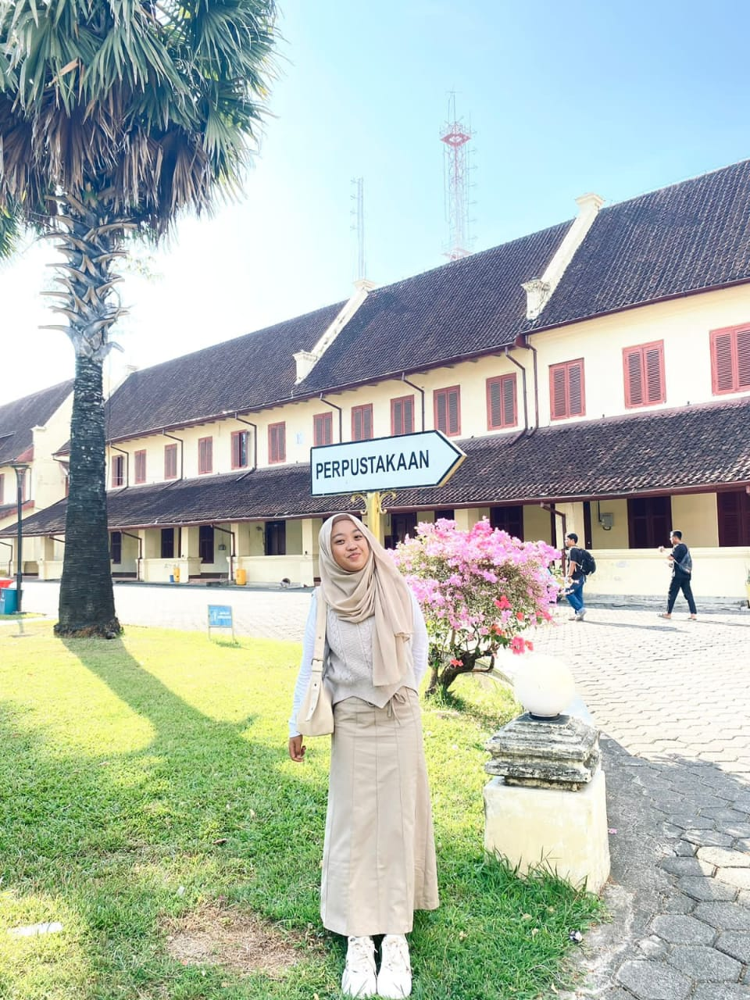
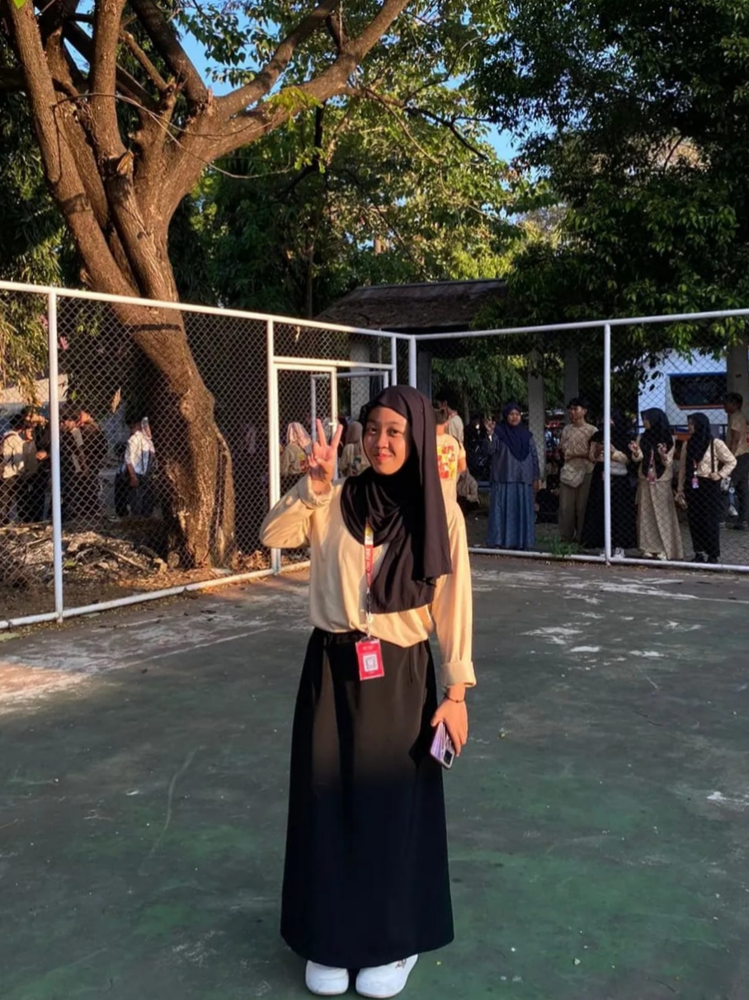
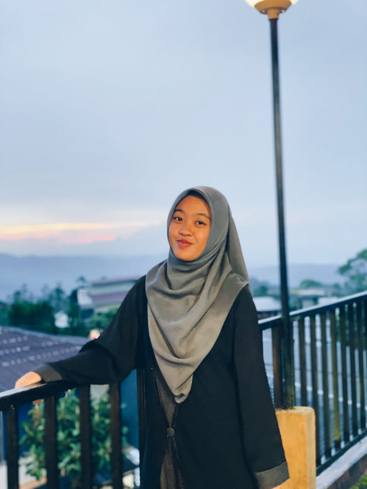
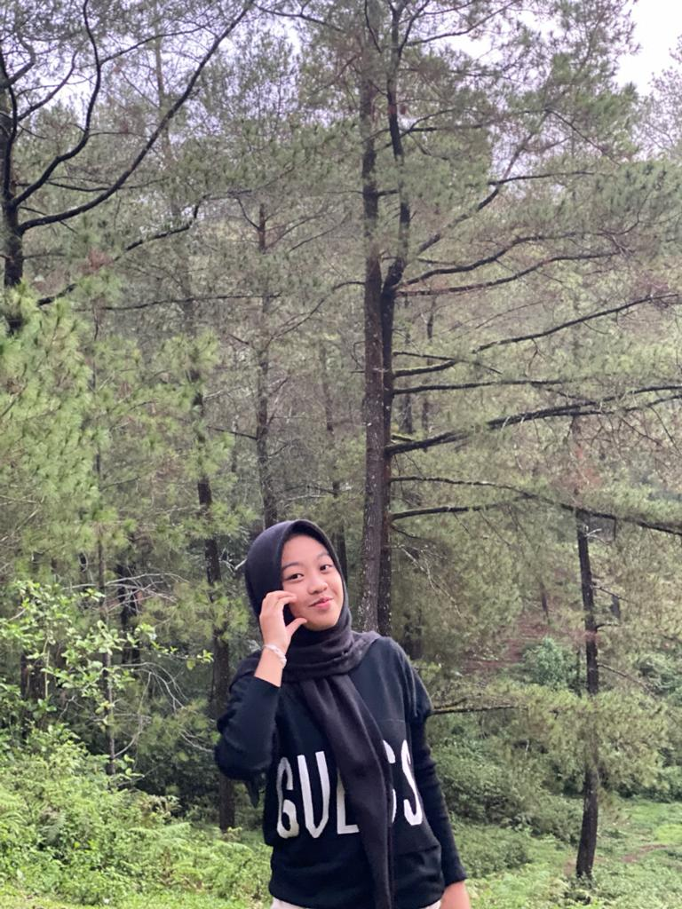
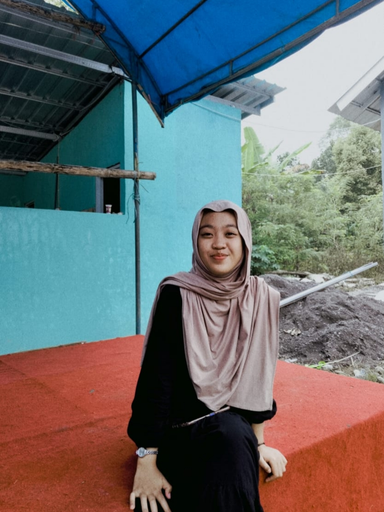
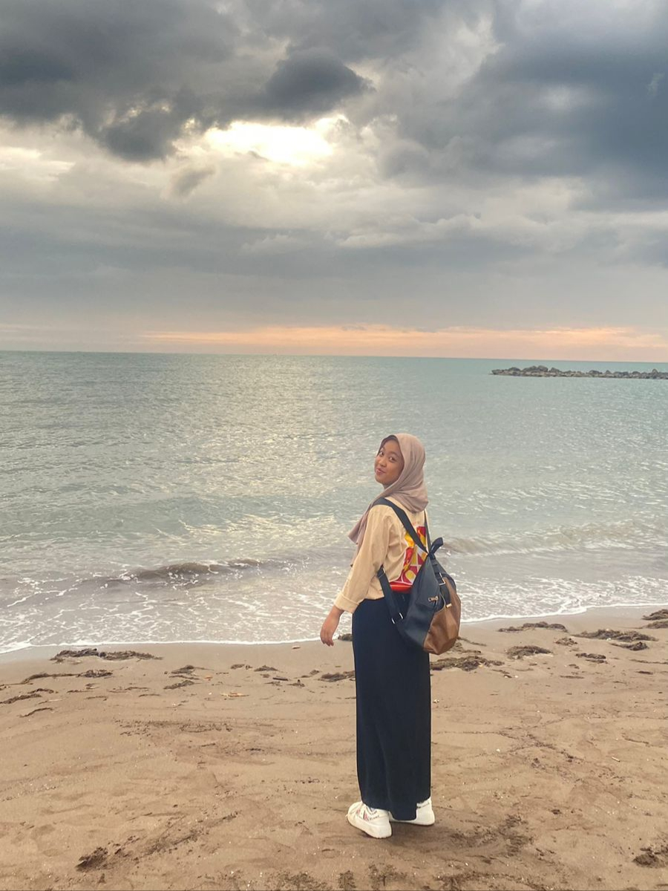
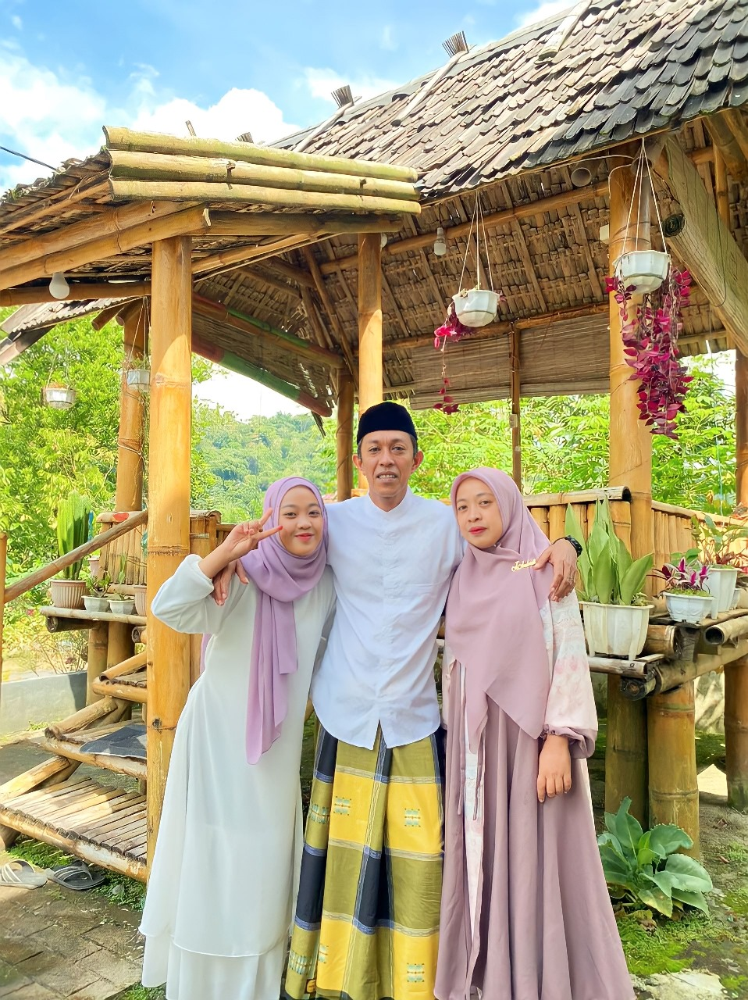
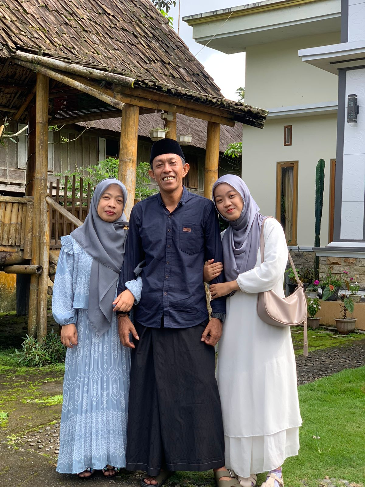
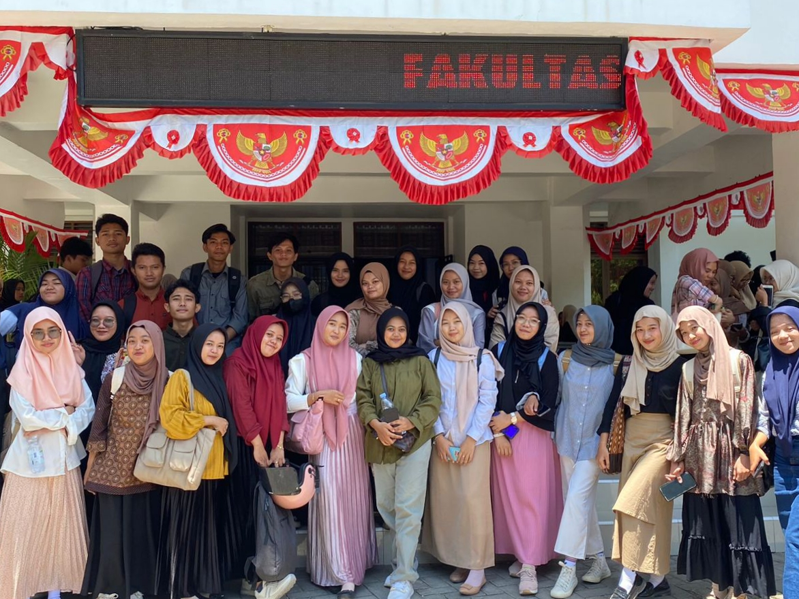
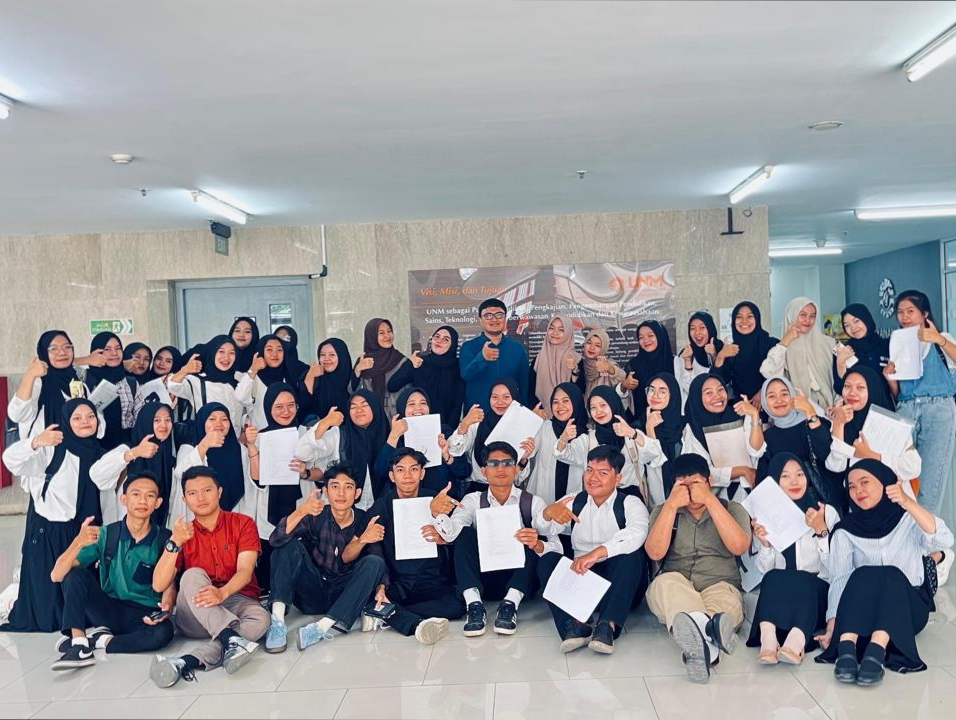

LET'S CONNECT AND SHARE OUR EXPERIENCES. SCROLL DOWN TO KNOW MORE ABOUT WHAT I DO!!
ABOUT
Halo! Nama saya Andi Rezky Anggraeni AL, tapi saya lebih senang di panggil Kiky atau Cici. Saya merupakan anak tunggal yang lahir di Malino Kota Bunga tepat tanggal 22 September 2005. Haii It's me!✨






Saya seorang mahasiswa Teknik Informatika dan Komputer di Universitas Negeri Makassar. Saat ini, saya sedang mendalami berbagai bidang dalam dunia teknologi, termasuk pemrograman, pengembangan web, dan kecerdasan buatan. Saya tertarik pada bagaimana teknologi dapat digunakan untuk memecahkan masalah sehari-hari dan meningkatkan kualitas hidup. Saya senang mengeksplorasi tren terbaru di bidang teknologi dan selalu bersemangat untuk belajar hal-hal baru yang dapat memperluas pengetahuan saya.
I have many support systems in my life. My main support system dan yang selalu menjadi sumber semangat saya adalah My parents. Mereka adalah kekuatan terbesar yang mendorong saya untuk terus maju dan menghadapi segala tantangan dengan penuh motivasi.


My other support systems are also very important. I have my fren yang super gacor dan random dengan berbagai jokes nya yang buat saya selalu ketawa wkwkwk. Those are my classmatess 💖🌸✨.



Ketika tidak berkutat dengan coding dan proyek, saya menikmati lagu favoritku atau ketika saya jenuh dalam mengerjakan codingan saya biasa sempatkan rewatch spiderman hihii^^.